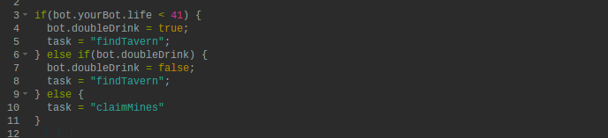

Computer Science Expedition:
A Guide to Computer Programming

What is Vindinium? - An artificial intelligence programming challenge
Objective and Rules
The goal of the game is to have your bot amass the largest quantity of gold within the predetermined 1200 turns. To collect gold your bot must claim mines either by attacking a mine or killing another player (the mines of the murdered player become your own). Your bot must periodically go to a tavern to restore its health; exchanging 2 gold results in a life points increase of 50. Note that claiming mines and attacking other players reduces your life points by 20 upon each occurance; your health also drops by one point each turn.
Meet Stormageddon!
Stormageddon is my fantastic bot (he needs a lot of encouragement) that makes decisions as to what actions to perform based on feedback from the game (as opposed to player imputs).How Stormageddon Works
Stormageddon performs two basic tasks: to find a tavern and to claim mines.
If the task is (===) "findTavern" the phrase "Going to a Tavern" will be printed on the console and Stormageddons's direction will be set to be a path between its current positon and the closest tavern. The claimMines task functions in a similar fashion.
The above if statement checks to see if a task is assigned to be a specific phrase, but Stormageddon's decision to assign a phrase to a task is based on a different if statment.

This if statement is what actually sets the tasks. If Stormageddon's life (stored within the yourBot object, within the bot object) is below 41, the task will then be set to "findTavern." (Please ignore "doubleDrink" for a moment, it will be explained below.) If the above conditinons are not met, the default is that Stormageddon's task is set as "claimMines."
After watching several rounds of gameplay, I realized that making Stormageddon drink twice when he goes to the tavern is the best strategy; by drinking twice (having 50 life points added twice to Stormageddon's health) it ensures that he has full health after leaving the tavern.
In order to accomplish this a boolean (true/false statement) entitled doubleDrink was created and set to false. As can be seen in the above code, if Stormageddon's health is below 41, doubleDrink is set to true; but Stomageddon doesn't reach the tavern right away, instead he spends time/turns walking. At this point, Stormageddon's health is below 41 and he is heading towards the tavern, doubleDrink is also true. Because of the nature of if statements, Stormageddon will only consider the first condition met, so even though doubleDrink is true, it will be ignored because Stormageddon's health is still below 41. The condition when doubleDrink is true will only be run immediatly after Stormageddon reaches the tavern once (the health will be above 41 bue doubleDrink will be true). This then sends Stormageddon to the tavern again (Stormageddon's task is set to "findTavern") but as he is right next to it (he just went and hasn't had a chance to move away) he will immediatly drink on the next turn, thus double drinking.
Now that Stormageddon's thirst is satisfied his task will be sent to "claimMines" so he can go claim the closest mine.
This cycle will repeat every time Stormageddon's health drops below 41 until the game has reached its end.